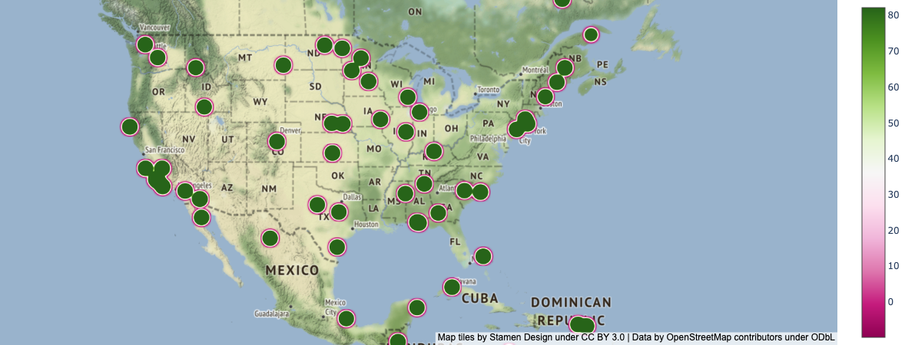

Area (the map of the United states and the bar above showing electoral votes needed)
This vis utilizes color as a good mapping technique as it is clearly distinguishable which states were red (Republican) and which states were blue (Democratic) in the map.
This vis also utilizes length as a good mapping technique, because it can clealy be seen when the length of the line reaches the arrow.
Channels
Colors (red and blue) to represent which candidate was voted for, Length on the top bar to show when enough electoral votes were reached
This vis utilizes color as a good mapping technique as it is clearly distinguishable which states were red (Republican) and which states were blue (Democratic) in the map.
This vis also utilizes length as a good mapping technique, because it can clealy be seen when the length of the line reaches the arrow.
Colormap
Colormaps: Categorical, as the political party is either Democrat or Republican (categories)
The colormaps are done well because there are two distinctly different colors for the two parties.
Visualization 2
Marks
Marks: Points to represent the balls
Channels
Channels: Position (both) with horizontal representing exit velocity and vertical representing launch angle, color to represent if the scoring value was above or below average
The use of horizontal/vertical position is good mapping as it allows the velocity of the ball to be compared to its launch angle.
The use of color is also a good mapping technique as the points on the map with an above-average LWTS are highlighted by the darker yellow color.
Colormap
Colormaps: Divergent, as the LWTS score is colored based on two extreme colors (purple and yellow) that diverge in the middle.
The colormap is done well as displaying if a score is above or below average can easily be seen based on the divergent colors.

Visualization 3
Marks
Marks: Points to represent the location where the temperature was captured
Channels
Channels: Position displayed on a geosptail map of America based on latitude and longitude, color to represent the temperature at that location on a certain day
The use of horizontal/vertical position is good as it takes a familiar sight, a map of America and overlays some temeprature data on it.
The use of color is also a good mapping technique as it is divergent and that is a good way to display temperature data that ranges from hot to cold.
Colormap
Colormaps: Divergent, as the color bar has a gradient going from green to purple.
The colormap is done well as it displays the ranges of temperature easily to the viewer